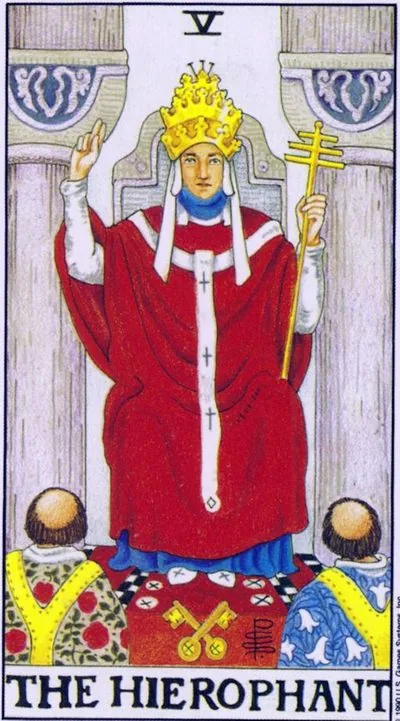

Major Arcana · V
VThe Hierophant
Knowledge tested by generations: a teacher, tradition and meanings that are more than one person; time to learn from masters, observe the rules of the environment and formalize the main thing in an accepted form.
Archetype and core meaning
The hierophant in the three-crown tiara blesses two novices; the keys at his feet open both the outer doors of the temple and the inner meanings. He is the high priest of the deck, the guardian of succession: knowledge that will outlast individuals if transmitted correctly. Taurus gives him the patience of the earth to teach slowly, thoroughly, for life.
In the layout, the arcana indicates entering into a tradition: religious, scientific, corporate, family, marriage, marriage, a diploma recognized by the community, a craft learned from a master, the card respects the rules not as a cage, but as a channel, in which power flows, not spills.
Daily life
A day of appropriate rituals: family dinner on Sundays, congratulations on all the rules, visits to elders. It's good to seek advice from a mentor, to sign up for training, to fulfill previously made promises. The formalities - statements, registrations, official ceremonies - go smoothly. Not a good day for outrage: the environment values decency, and you can be original tomorrow.
Work and career
Arcan points to the structure of a corporation, a university, a government agency, a code and hierarchy industry. It's going by the rules -- certification, seniority, recommendations; it's expensive to break protocol now, but it's profitable to follow. It's a good time to mentor and find mentoring, teaching, publishing in your field. If you're building your own school or methodology, the Hierophant suggests that you set it up with standards: certification turns opinion into a system.
Relationships
Here, the card almost always speaks of marriage: an offer made in front of a family, a ring worn in ritual, a union recognized by both parties. It blesses couples willing to go from "meet" to "we are family," including legal and church decorations. The value of the period is shared values: the convergence of views on money, children and holidays is stronger than passion.
Health
Taurus is associated with the throat and neck: take care of the throat, watch the thyroid gland, do not overextend your voice. The card favors classical medicine: an experienced doctor, proven protocols, a sanatorium for the purpose work better than exotic methods. The regime helps - food and sleep by the clock literally cure. From prevention, it is ideal to leisurely walks, moderate food and refusal to self-medicate "on the advice of a friend" in favor of qualified care.
Spiritual meaning
The way of Vab, the nail, connects Hokmah and Hesed: that which binds wisdom with mercy into the stable construction of tradition. The Hierophant is the hierophant of the Eleusinian mysteries: he is not a god, but an intermediary who introduces the initiate into the hall. In practice, this is the lass of teachers and transmission lines - choose a school and a mentor as you choose the keys to your home.
Crisis of trust in institutions: rules no longer make sense, dogma reveals falsehood – a person has to choose between a loud rebellion against the system and quiet personal faith without intermediaries.
Archetype and core meaning
The inverted Hierophant is the collapse of authority. A person finds himself for years following rules no one has believed in for a long time: ceremonies without meaning, rules without reason, titles without rights. The reactions range from quiet retreat into personal spirituality to loud rebellion against all traditions at once, with the same risk of pouring the baby with water.
The other side of the card is the false guru: the teacher who demands submission instead of understanding, the system that passes dogma for truth, the group where doubt is equated with betrayal. Arcana offers a fundamental revision: which of the rules you have adopted are really yours? Keep the essence and replace the shell - a faith that has grown out of experience, stronger than inherited furniture.
Daily life
In everyday life, the day of breaking the usual scenarios: family ritual suddenly seemed meaningless, "so it is" causes irritation, and the requests of relatives are protests. A good time to honestly re-assemble the way: leave what works, and abandon the performances for others. Careful with demonstrative decency - freedom does not have to be noisy. In the evening, talk to older people in a human way, without the role of obedient or rebellique: behind the ritual there is often a simple need for contact.
Work and career
At work, the card shows a conflict with corporate culture: instructions written for another era, bosses substituting meaning for regulations, KPI instead of business. You can leave the system — change your profession, your practice, freelancing — or internal emigration, which is worse than leaving. If you are the leader, check if you require obedience where you need understanding. The constructive way is to propose new rules officially: the inverted Hierophant respects not rebellion, but reform.
Relationships
In relationships, arcana often means a union that doesn't fit into the pattern: age, religion, status, "unconventional" family composition, and the pressure of an environment that requires conformity. A couple faces a choice: live their own story or someone else's script. There may be a crisis of loyalty to tradition within marriage, where the roles of "husband" and "wife" are fulfilled and people in them have long been lost. A healthy solution is to rewrite the contract together: customs should serve the couple, not the couple customs.
Health
The body reacts to the incarceration of the throat and neck: the lump in the throat of the unspoken, hoarseness, clamps from the eternal "hold on well." The psychosomatics of this arcana is illness from living in someone else's scenario: the symptoms recede when the person stops playing the imposed role. Be more discerning with "proven folk" methods and fashionable cleansing systems - the inverted Hierophant trades them as well.
Spiritual meaning
The spiritually inverted Vav is a line of transmission, torn or altered: a teacher who usurped the space between man and truth, a tradition that became a cell for the spirit. The card warns of sectarianism in all garb, from religious to business-esoteric, and revenge on the system at the cost of one's own soul. The practical way out is direct connection: texts without intermediaries, practice without entourage, personal experience as a supreme commentary. A true teacher, after testing, rejoices in your independence.
🌿 In brief
The main idea
The Hierophant is the mediator between man and knowledge. It doesn't necessarily create new knowledge itself; it's the job of preserving the existing system and passing it on to the next person.
How it manifests
The hierophant gives the person access to the knowledge system: "Here's the key. Here's the rules. Now learn."
In a relationship
Traditional marriage and family rules are often the norm.
Work.
Teacher, specialist, mentor, consultant, a person who knows the rules of the profession well.
The shadow side
Tradition becomes dogma. "Our grandfathers did this" becomes an argument against any new solution, and the person begins to observe the form, forgetting why it came in the first place.
Feature of the school
The hierophant is connected to the third house and the Gemini, and the opposite is the Devil: the Hierophant transmits the finished system, the Devil makes you think with your own head.
📜 In detail — lecture extracts
Essence of the card
The hierophant is a card-mediator in the work with knowledge: unlike the Magician (Mars/Athena), he does nothing himself - "sitting and passing this knowledge on to other people," deciding to let you know or not. In his system of correspondences, this is the 3rd house (Twins): Mercury in the 1st abode and Proserpine/Persephone in the 2nd. The archetype is reduced not so much to religion as to formality: faith is what we feel inside, religion is form, "we need something in which is inspired by the world, religion is not provided by the "the philosophy of the water, the benee to the world."
Upright position
- There is no Slavic mythology for this card in school.
- A general series: teacher, guru, teacher of higher education, council of smart people, system of knowledge, tradition, society, norms, "hierophant is also the norm"; a guide to the world of knowledge: gives the "key, code of access" to knowledge, introduces to tradition (sorcerers, astrologers); the right teacher to all the same (Sasha or Petya is the same advice), gives general information: "the earth is round, rockets fly."
- Relationships: very often talks about marriage — and about the traditional, which “is not a stamp in the passport” (documentary union is Justice with Themis), and the marriage accepted by your tradition (even “one husband and two wives”). Family — the transfer of information from parents to children, their family traditions (he has pizza on Mondays); the question “how a man will behave with me” — acts by habit, according to the established pattern of relationships; the question “does the future see me” — wants to continue, quite likely — traditional marriage.
- - Work and finance: information; authority professionals who know the rules (laws, real estate); philanthropist/sponsor shares information about finance rather than money directly (this is the principle of the Six Pentacles); Traditional: deposits at interest, “don’t invent the wheel”, “why do you need bitcoins”.
- Self-development: apprenticeship and learning (e.g., astrology), listening to older people after 14 years, the way to knowledge is by tradition, taking responsibility for your own journey is the subject of the next card (Lovers).
Negative meaning
- “Minus card” is a negative value: the same reliance on tradition, but with an unpleasant taste:
- Authoritarianism: “Our great-grandfathers lived well, let’s not change anything.”
- Moralization is the defense of traditions without understanding the essence ("if it is accepted so, then so, why do you walk in a short skirt");
- Dogma – action in form, regardless of the meaning of the situation: drink wine and eat the wrappers, “what does it matter why, think less, do as everyone else”;
- - Patterns of thinking and reluctance to new, denial of innovations (cash is easier than electronic wallets - do not think);
- Boring – persistent repetition of the same thing, “stretching one principle”;
- The fanaticism of neophytes – missionaries who repeat memorized phrases (the missionary himself is a bright personality, this is the devil’s line);
- The surface of Twin knowledge: knows a lot of things, but a little bit.
- Relationships are negative: a person does not want change – “it is good for him to ritually repeat the same actions.”
School emphases and distinctive points
- - Couple and antithesis: pair card - Lovers (same 3rd house); the exact opposite - the Devil (9th house, Jupiter), which is best understood "in the context of confrontation with the Hierophant": The Devil teaches to think with his head and individuality. The priestess is only "consonant" (pillars Boaz and Yachin).
- - The Eleusinian Mysteries: "hierophant" in Greek, "the future-knower," the senior life-long priest of Demeter and Persephone; initiation united man with God until immortality; the students were given a kikeion, a drink of barley and mint with ergot and psilocybin: the psychedelic gave direct knowledge of the gods, hence "the future-knower." The sequel is church wine and a lad. The lecturer's reservation: "Drugs are evil, it is a historical lecture."
- Waite and symbolism: his descriptions are treated with caution (version: a small white book "to confuse the traces" of the secrets of the Golden Dawn); the W behind the tiara is the autograph of the transmitter of knowledge; the crossed keys are the keys to access secrets; the two tonsured disciples are twins, "brothers in Christ"; the tonsur is a crown of thorns; the advice is suitable for someone who looks like those for whom the rules are written.
- Mercury/Hermes Trismegistus: the syncretic image of Thoth and Hermes, the “collective image of all magicians”; the Hermetic Corps (Ficino, XV century) defined the occultism of the modern age; Mercury is the god of trade (merx) and the conductor of souls; trade is “life on the difference of prices”, walking between two worlds.
- Age scheme: up to 7 years - desires, 7-14 - "Mother loves, Dad educates", after 14 - hierophant: peers and advice of older people.
- - Film/literature: Don Juan Castaneda - a shaman, more hierophant than modern priests (a decoction of cacti, ayahuasca); the film "Blueberry"; the blue caterpillar from "Alice" (advises mushrooms, but does not know what it is like to change - was not yet a butterfly); Morpheus from "The Matrix" - the most recognizable modern hierophant (" I did not say it would be easy, I only promised to open the door"); the series "Young Dad" (Jude Law) - to develop a tradition, not to deflect a rabbit, but rather a Russian - a little bit of the school - Anatoly, but a Russian - a lively - a sayerophant - a Russian - a selphant - a Russian - a Russian - a sarist.
- Bad fortune tellers are the “final hierophants” (all the same); the individual approach comes through the ninth house.
- The question about the Karmic card was postponed: “I am not a particular supporter of the karmic vision of the world.”
Keywords
- Mediator · Keeper of tradition · access to knowledge (keys, “access code”) · teacher and students · formality of faith · norm · general information · initiation into teaching · traditional marriage · template / dogma · Mercurian transfer of knowledge.
- ---